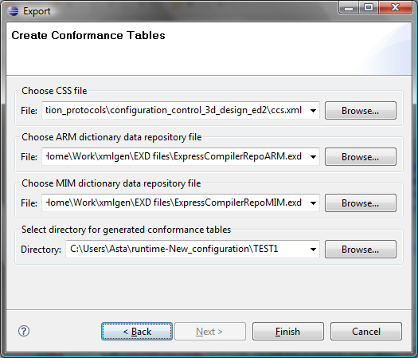

JSDAI EXPRESS-G presents a tool to create conformance class/options
table for modular APs. The result of this tool is stored in the
files coarm.xml and comim.xml in the folders of the AP
in stepmod.
The input data for the tool is:
ccs.xml in stepmod, this
file requires the presence of correct
comim.xml and coarm.xml files in the same
directory as well, and also ccs.dtd
file in this relative location from ccs.xml: ../../../dtd/ap_doc/
so better to use the css.xml directly in stepmod;
ARM dictionary data repository file (.exd extension);
MIM dictionary data repository file (.exd extension).
The output data is newly generated coarm.xml
and comim.xml files. These
files may be generated in a different location and/or with different
names, or may overwrite the original files.
Follow the routine to create conformance tables for modular APs:
Right click in the Navigator area
and select Export menu item
in the appeared context sensitive menu or select in the main workbench
menu bar File -> Export.
The Export wizard
dialogue window appears on the screen. Expand JSDASI branch (see Figure 1).
Select Conformance tables
for modular APs node and press Next
button. The second Export wizard
dialogue page appears to specify input data and the location of the
output data (see Figure 2):
 Figure 2. Export wizard
dialogue window, to specify input data
Choose CCS file -
locate a path to the CSS file (ccs.xml)
by using Browse button.
Choose ARM dictionary data
repository file - locate a path to the ARM dictionary data
repository file (.exd
extension) by using Browse button.
Choose MIM dictionary data
repository file - locate a path to the MIM dictionary data
repository file (.exd
extension) by using Browse button.
Select directory for generated
conformance tables - locate a path to the destination folder by
using Browse button.
Press Finish button.
The newly created coarm.xml
and comim.xml files appear
under the specified directory (named coarm_new.xml
and comim_new.xml).